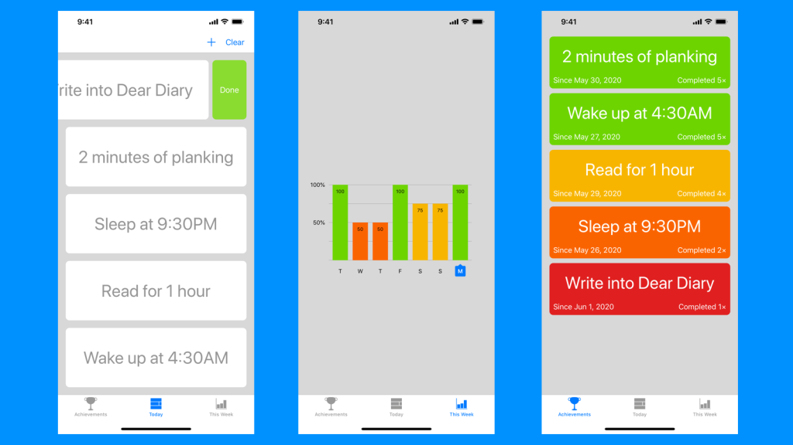

AppStore.apps.count += 1
I found an app that I was working on, but paused for a long time. In the past month or so, I have completed it. And now it is ready to meet with the world.
Motivation
Have you ever wanted to form a good habit and live with it? Well I have. I wanted an app that can remind me what habit I have accomplished for the day and what has not. For example, I wanted to read a book for 1 hour a day, and write a diary, and I want the app to remind me what I have accomplished and what is left to do. Yes... I can set a recurring event on my calendar app. But believe me, they have been there ever since I have owned a phone. And I will let you to guess how many times have I dismissed the notification, or deleted the event from the calendar altogether, and re-added the same recurring event back to the calendar app.
Moreover, how does the calendar app know that I have done it? Well the calendar app isn't even made for that purpose. Well there is the Reminders app on iOS, you can set it to repeat daily and remind you at a specific time. True, and it almost does the job I want. But I wanted to keep track of my historical achievements, and look at my streak of the week, that is where "Disciplines" is born. It does all that.
